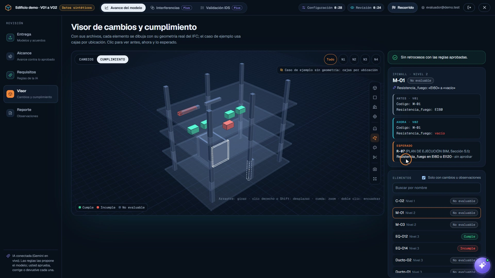

Grupo 20 · Eje Startup · Hito 3
AI model audit
Lo que cambió. Lo que falta. La evidencia.
Revisión de entregas BIM con IA: compara dos versiones IFC contra el BEP y las actas, elemento por elemento.
Petición: 2 pilotos pagados →
Manuel Daniel Bencomo Rojas · Rainer Luice Murrieta Huaranca · 19/11/2026
01 · Problema
Revisar una entrega BIM sigue siendo manual.
22,5 h
mediana por auditoría manual (rango 9–36 h)
6 de 6
empresas con retrabajo en los últimos 3 meses
5 de 6
usan Navisworks, que detecta choques pero no compara información
Caso real AICC
+74% de elementos…
…y el cumplimiento de requisitos bajó de 37,1% a 33,5%. Contar cambios no es medir avance.
Por qué ahora
BIM obligatorio
en 14 tipologías de inversión pública desde agosto de 2026 [F1].
Fuente: 6 entrevistas a consultoras BIM y de ingeniería de Lima (02–11/10/2026) · auditoría AICC (07/10/2026)
02 · Solución e IA
La IA propone. Usted aprueba. El motor decide.
1 · IA propone
Reglas desde el BEP y las actas
Cada regla cita su fuente. Gemini 3.5 Flash-Lite, US$ 0,02 por propuesta.
2 · Coordinador aprueba
Nada se verifica sin aprobación
Aprueba, corrige o devuelve. 4 de 6 confiarían sin revisar: por eso es obligatorio.
3 · Motor verifica
Veredicto determinista
Cumple, incumple, retrocede o «no evaluable». El IFC nunca sale del navegador.
14/15
reglas útiles con Gemini en vivo (93%; meta ≥ 80%). Resultado en CSV, HTML y BCF 2.1, para Revit o Navisworks.
Pruebas E y F del anexo · F6: el mejor LLM logra 65,6% de F1 al generar IDS (Kanazawa et al., 2026)
03 · Demo en vivo
La demo, paso a paso.
1 · Inicio de sesión
2 · Caso de ejemplo cargado
3 · La IA propone; usted aprueba
4 · Visor 3D: M-01 retrocedió
5 · Reporte CSV · HTML · BCF
6 · Plus: interferencias
7 · Plus: validación IDS
8 · Asistente IA en vivo
Demo: manuelzv150-art.github.io/ai-model-audit-bim/interferencias/ · caso de ejemplo con datos sintéticos · video de 1:19 (respaldo completo: 3:20)
03 · Resultados verificados
Con datos reales: los mismos veredictos que las herramientas de referencia.
88/88
veredictos de información iguales a IfcOpenShell
54
choques duros confirmados, 0 falsas alarmas
92/92
veredictos IDS iguales a ifctester
36/36
tareas logradas sin ayuda por 6 usuarios
12/12
respuestas correctas del asistente IA (prueba F, ronda final)
2,5 s
lectura de ambos IFC y detección de choques
Proyecto real MARIAN (Revit 2026, IFC2X3) · referencias: IfcOpenShell 0.9, ifctester, manifold3d · anexo, sección 3
04 · Validación
Lo que escuchamos y probamos cambió la propuesta.
6 entrevistas con el mismo guion
6/6 con retrabajo → mostramos primero los retrocesos
Decisión
Alternativas: 5/6 Navisworks, 0/6 Solibri
→ complementamos Navisworks vía BCF 2.1
Decisión
Solo 2 de 6 trabajan con IFC
→ SAM corregido de 50% a 33%
Supuesto rechazado
4 de 6 confiarían sin revisar
→ aprobación humana obligatoria
Decisión
11 participantes: 6 entrevistas + 5 encuestas tras la demo
5 aceptan el piloto y 5 lo condicionan
Señal de interés
Regla fijada antes de codificar: patrón = ≥ 3 menciones · trazabilidad completa en el anexo, sección 7
04 · Hipótesis de precio
Precio: US$ 180 no se confirmó (3 de 8).
8 de 8
respuestas válidas · meta cumplida
3 de 8
ponen US$ 180 dentro de su rango (38%; meta 70%)
US$ 35–125
mediana «barato» · «caro»
Aprendizaje: hay dos segmentos → dos planes
US$ 180
Consultoras con BEP · valoran US$ 100–300 · 3 pilotos aceptados
US$ 50 · Profesional
Coordinadores e independientes · en rango para 5 de 5
Válida = US$ 180 no mencionado antes de las preguntas · E-01 a E-03 entrevistas; E-07 a E-11 encuesta escrita tras la demo
05 · Mercado y modelo de negocio
Mercado en proyectos; cobro por proyecto.
TAM · 308 proyectos
US$ 665 280
por año · edificación con BIM en Lima [F3]
SAM · 103 proyectos
US$ 222 480
33% con BEP e IFC, medido en campo
SOM año 1 · 20
US$ 36 000
igual al punto de equilibrio
US$ 152
contribución por proyecto de consultora (180 − 28)
15 + 15
proyectos de consultora + Profesional = equilibrio (fijos US$ 2 907)
14%
de ahorro paga el plan: auditar a mano cuesta US$ 1 256 al mes
Competencia: Navisworks ≈ US$ 2 000/año (choques, no datos) · Solibri € 2 109–2 772 · BIMcollab € 150–300 · anexo, secciones 4 y 6
06 · Limitaciones
Lo que todavía no está probado, dicho con claridad.
Ahorro de tiempo (H2) y costo de soporte (H5)
0 pilotos firmados: se miden en el primero · meta ≥ 30% y ≤ US$ 60
En medición
Plan Profesional de US$ 50
viable solo con soporte autoservicio (0,5 h, supuesto)
Supuesto
Holgura entre muros
exhaustividad 13,8% con cajas envolventes → medición en malla
Fase 1
Clientes sin IFC (solo 2 de 6)
guía de exportación desde Revit y complemento Revit
Etapa 2
Demo de prototipo
inicio de sesión local; el caso de ejemplo usa una respuesta de IA pregrabada
Etapa 2
Riesgos y respuestas: anexo, sección 6 · deck, diapositiva 12
07 · Petición y próximos pasos
Pedimos 2 pilotos pagados de 1 proyecto.
US$ 180 al mes · nov–dic 2026 · 2 IFC + BEP autorizados · un coordinador que cronometre. Si no ahorra 30%, no hay segundo mes.
Nov–dic 2026
2 pilotos · medir H2 y H5
Ene–mar 2027
5 empresas · ≥ 8 proyectos
2027
20 proyectos · equilibrio
manuelzv150-art.github.io/ai-model-audit-bim/interferencias/
Manuel Daniel Bencomo Rojas · coordinador BIM · Rainer Luice Murrieta Huaranca · especialista BIM · ¡Gracias!